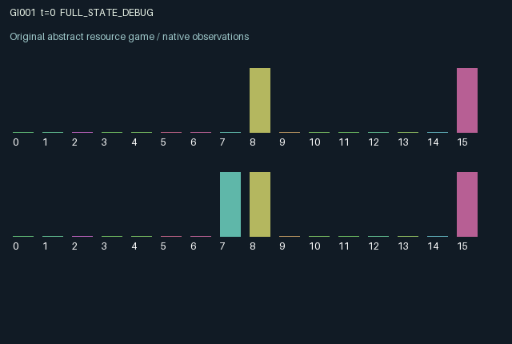

GI001 / LEGACY_ARRAY
Reciprocal finishing pipeline
2 agents5 actions16 observation columns32 original horizonRuntime: PASS
Release verification episode
Untrained uniform legal actions. Actual JAX state sampled along the full original episode; full-state debug camera. No human performance or learning claim.

Run this game
crucibles play --game 1
Start Python locally, then open the address printed by the terminal. Installation, multiplayer, takeover and keyboard controls →
Objective, rewards & ending
Exact task contract
{
"objective": "Accumulate original per-agent rewards under the interaction rules in mechanism.md.",
"natural_termination": "No early terminal; original t >= 32 horizon.",
"exact_transition_and_reward_source": "def raw_step(self, key, state, actions):\n # 0 cool, 1 fabricate, 2 forward, 3 finish partner goods, 4 purge.\n operational = state[\"heat\"] < 0.8\n made = ((actions == 1) & operational & (state[\"raw\"] < 3)).astype(jnp.int32)\n sent = ((actions == 2) & operational & (state[\"raw\"] > 0)\n & (jnp.roll(state[\"finish\"], 1) < 3)).astype(jnp.int32)\n completed = ((actions == 3) & operational & (state[\"finish\"] > 0)).astype(jnp.int32)\n purged = ((actions == 4) & (state[\"finish\"] > 0)).astype(jnp.int32)\n raw = state[\"raw\"] + made - sent\n finish = state[\"finish\"] - completed - purged + jnp.roll(sent, 1)\n heat = jnp.clip(state[\"heat\"] + 0.22 * (made + sent + completed)\n - jnp.where(actions == 0, 0.35, 0.08), 0.0, 1.0)\n rewards = 0.2 * completed + 0.65 * jnp.roll(completed, 1) - 0.04 * made - 0.03 * purged\n next_state = {\n \"t\": state[\"t\"] + jnp.array(1, dtype=jnp.int32),\n \"raw\": raw.astype(jnp.int32),\n \"finish\": finish.astype(jnp.int32),\n \"heat\": heat.astype(jnp.float32),\n \"last\": actions.astype(jnp.int32),\n \"completed\": completed.astype(jnp.float32),\n }\n done_all = next_state[\"t\"] >= 32\n dones = jnp.full((2,), done_all, dtype=jnp.bool_)\n info = {\"done_all\": done_all, \"legal_mask\": self.legal_actions(next_state)}\n return self.observe(next_state), next_state, rewards.astype(jnp.float32), dones, info"
}Declared per-step reward bounds: -1.0 to 1.0. Observability: source_defined.
Rules
Original mechanism document (historical status wording retained)
# Reciprocal finishing pipeline Status: authored proposal, not executed or validated. Each agent fabricates its own unfinished goods into a capacity-three input queue, then forwards them into the partner's capacity-three finishing queue. Only the partner can finish those goods. Finishing earns the operator a 0.2 commission and the originating producer 0.65. Fabrication costs 0.04. The finishing operator may instead purge a good at cost 0.03, destroying the producer's potential return. Actions use old queues and heat. A newly fabricated good cannot be forwarded that step, and a newly forwarded good cannot be completed that step. Sending checks old receiver capacity conservatively, so a concurrent completion does not permit sending into a formerly full queue. Productive operations generate heat; excessive heat prevents those operations, while cooling reduces it. Purging remains possible when hot. These rules create bilateral delayed dependence and competing demands on each operator's own action time. Both agents observe both queues, both heat values, own recent action, both recent completion indicators, time, and role. Hidden variables are absent. All actions are legal; unavailable operations have no queue effect. Rewards lie between -0.07 and 0.85 even under a loose bound, hence inside [-1,1]. Both agents can alter persistent queues and partner income. The mechanism is related to generic production networks, hold-up, and reciprocal service exchange. It is not claimed novel in a formal sense or nonisomorphic to existing games. No source execution, compiler success, eligibility, or learning-effectiveness claim is provided. Initial raw queues are sampled with the supplied key; termination preserves state at t >= 32.
Commands
0Cool
1Fabricate
2Forward goods
3Finish partner goods
4Purge goods
Roles & abilities
agent_0 Original legacy agent; see mechanism and source
agent_1 Original legacy agent; see mechanism and source
Observation permissions
Training receives only the original observation rows. Role cameras use declared visibility; debug cameras are explicitly marked. Local benchmark records log debug exposure and role takeover history.
Exact observation layout
[
{
"slice": [
0,
16
],
"visibility": "exact original observe() below",
"source_code": "def observe(self, state):\n obs = jnp.zeros((2, 16), dtype=jnp.float32)\n obs = obs.at[:, 0].set(state[\"raw\"] / 3.0)\n obs = obs.at[:, 1].set(jnp.roll(state[\"raw\"], 1) / 3.0)\n obs = obs.at[:, 2].set(state[\"finish\"] / 3.0)\n obs = obs.at[:, 3].set(jnp.roll(state[\"finish\"], 1) / 3.0)\n obs = obs.at[:, 4].set(state[\"heat\"])\n obs = obs.at[:, 5].set(jnp.roll(state[\"heat\"], 1))\n obs = obs.at[:, 6].set(state[\"t\"] / 32.0)\n obs = obs.at[:, 7].set(jnp.arange(2, dtype=jnp.float32))\n obs = obs.at[:, 8:13].set(jax.nn.one_hot(state[\"last\"], 5))\n obs = obs.at[:, 13].set(state[\"completed\"])\n obs = obs.at[:, 14].set(jnp.roll(state[\"completed\"], 1))\n obs = obs.at[:, 15].set(state[\"heat\"] < 0.8)\n return obs"
}
]Entity visibility & attributes
[]
Actual verification & provenance
Per-game execution receipt
{
"game": "gi001",
"status": "PASS",
"verification_revision": 2,
"source_sha256": "e55a3888bec1cd1b229fe2b78c8dd0abc12fdc9947d61ed60810d3ba14012d63",
"seed": 20261101,
"runtime": {
"jax": "0.4.38",
"numpy": "1.26.4",
"devices": [
"TFRT_CPU_0"
]
},
"dimensions": {
"num_agents": 2,
"observation_size": 16,
"num_actions": 5,
"max_steps": 32
},
"checks": {
"eager_reset": {
"status": "PASS",
"seconds": 0.5880584716796875
},
"observation_spaces_legal_masks": {
"status": "PASS",
"seconds": 0.13494300842285156
},
"eager_step": {
"status": "PASS",
"seconds": 0.36243391036987305
},
"jit_reset": {
"status": "PASS",
"seconds": 0.30118417739868164
},
"jit_step": {
"status": "PASS",
"seconds": 0.3023347854614258
},
"eager_jit_integer_parity_float_measurement": {
"status": "PASS",
"seconds": 0.0005221366882324219
},
"jit_vmap_reset": {
"status": "PASS",
"seconds": 0.29340672492980957
},
"jit_vmap_step": {
"status": "PASS",
"seconds": 0.1587362289428711
},
"outer_autoreset_api": {
"status": "PASS",
"seconds": 0.40079712867736816
},
"full_original_horizon_episode_and_render": {
"status": "PASS",
"seconds": 1.0267760753631592
}
},
"human_scores": null,
"browser_controls": "PENDING",
"failures": [],
"elapsed_seconds": 4.4074790477752686,
"float_parity_max_abs": 0.0,
"numerical_parity": "EXACT",
"raw_terminal_absorbing": "NOT_PART_OF_ORIGINAL_LEGACY_CONTRACT",
"terminal_outer_reset": "PASS",
"episode_steps": 32,
"scripted_random_returns": [
1.0999999660998583,
1.9299999363720417
],
"terminal": true,
"demo_information": "FULL_STATE_DEBUG",
"demo_frames": 33,
"render_roles_checked": 2
}Chromium control verification
{
"game": "gi001",
"status": "PASS",
"human_scores": null,
"engineering": true,
"checks": [
"catalog_selected_and_real_native_reset",
"dom_queue_and_native_step",
"second_participant_ownership_and_native_joint_step",
"all_roles_individually_controllable_no_role_cap",
"explicit_debug_camera",
"release_to_pure_ai_without_reset",
"close_session_preserves_log"
],
"ui_sha256": "96243f9de144b80b5e20a114330e2206bdcd58d3efc9c6f13bbc08b95cacc14d",
"keyboard": "NO_LEGAL_CARDINAL_COMMAND_FOR_ROLE0_AT_RESET",
"seconds": 4.81411075592041
}Original identity and file hashes
{
"id": 1,
"key": "gi001",
"title": "Reciprocal finishing pipeline",
"summary": "",
"tags": [],
"family": "legacy_array",
"dimensions": {
"num_agents": 2,
"observation_size": 16,
"num_actions": 5,
"max_steps": 32
},
"source_sha256": "e55a3888bec1cd1b229fe2b78c8dd0abc12fdc9947d61ed60810d3ba14012d63",
"manifest_sha256": "0b2331ecdc2c82efb9c1beced96d4fb611bd43e128e07c96f8cb7c870ae1da81",
"files": [
{
"file": "candidate.py",
"sha256": "e55a3888bec1cd1b229fe2b78c8dd0abc12fdc9947d61ed60810d3ba14012d63",
"bytes": 3015,
"origin": "work/exp_2/astra_generation/discovery_v2/initial/candidate_00001/attempt_00/candidate.py"
},
{
"file": "mechanism.md",
"sha256": "b196386902442ddbdfa58f45a5ea9d438750162e197ee1440e34e7323ccdba7c",
"bytes": 1746,
"origin": "work/exp_2/astra_generation/discovery_v2/initial/candidate_00001/attempt_00/mechanism.md"
}
],
"original_status": "LEGACY_SOURCE",
"original_saved_replay": false,
"release_validation": "PASS",
"human_scores": null,
"browser_validation": "PASS"
}